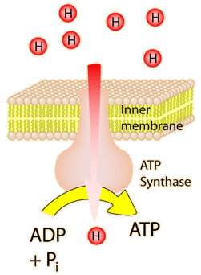

ATP Synthase
|  | ATP synthase is a complex which makes use of the proton potential created by the action of the electron transport chain in mitochondria. It transports a proton down the gradient and uses the energy to complete the phosphorylation of ADP to ATP. The current model of its action is called the binding charge mechanism, and it appears that part of this large protein complex accomplishes a mechanical rotation in the process of phosphorylation and release of the ATP molecule. So part of its action is like a molecular motor.
|
|
Index
Photosynthesis Concepts
Reference
Moore, et al.
Ch 7 |